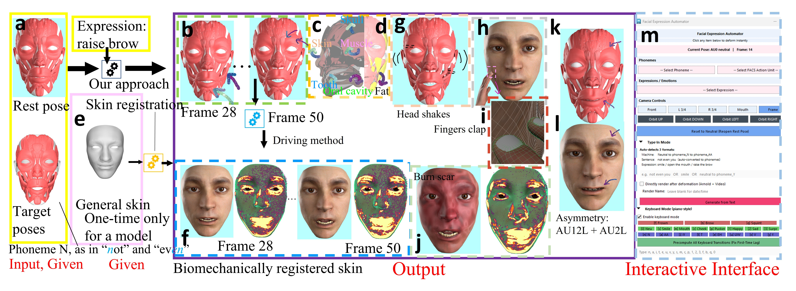

Beneath the Skin: Interactive Biomechanical Facial Simulations via Composable Co-Expressions
2Augmenta, United States

Realistic facial animation plays a pivotal role in animating convincing, expressive characters. While kinematic techniques offer great artistic engagement, and motion capture offers explicit human performances, biomechanical simulation promises physical plausibility. However, physical approaches often sacrifice artistic control due to the complexity of biomechanical motion synthesis. We argue that rigorous physics and intuitive control are not mutually exclusive; they can be seamlessly bridged through physical motor controllers that translate high-level artistic intent into underlying muscle activations. This framework significantly resolves the persistent historical trade-off between physical accuracy and animation usability.
Our framework generates muscle activation sequences for standard Facial Action Coding System poses, which artists can then compose into complex, realistic motion sequences. A key finding of our work is that simulating the smooth overlap of these controllers naturally aligns with the energy parsimony of human speech coarticulation, automatically generating biomechanically accurate trajectories. To fully realize this inside-out pipeline, we also introduce a physically-driven skinning technique that seamlessly attaches to our internal musculoskeletal model. Our experiments demonstrate that this optimization approach matches the visual fidelity of kinematic benchmarks while inherently exhibiting critical physical properties—such as volume conservation, gravity effects, and passive dynamics—at interactive speeds. Ultimately, our fully coupled framework proves that complex internal biomechanics can be practically integrated into artist-directable pipelines, granting unprecedented physical realism without sacrificing creative flexibility.